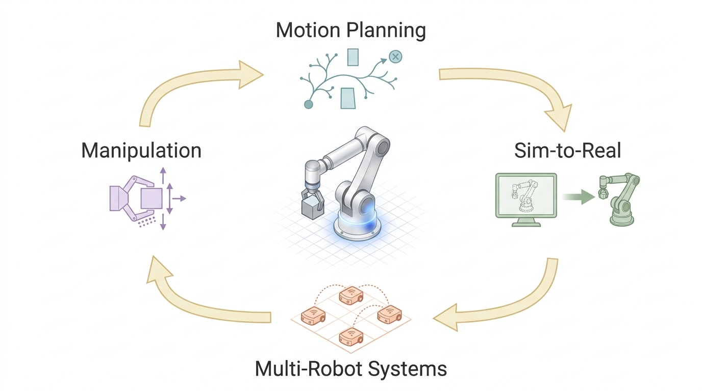

Overview
Robotics research is about building systems that perceive, reason, and act in the physical world. Unlike a model that only has to be right on a test set, a robot has to be right in real time, under sensor noise, with hardware that drifts, and around people who do not behave like a simulator. That gap between the clean model and the messy world is what makes the field interesting.
Robotics is also where my other research threads meet. Computer vision supplies perception, reinforcement learning from my autonomous driving work supplies control policies, AI security asks what happens when a robot's inputs are attacked, and computer systems decides whether all of it can run on the onboard compute in time.
1. Motion Planning
Motion planning answers how a robot gets from where it is to where it needs to be without hitting anything, and ideally in a way that is smooth, fast, and energy-efficient.
- Sampling-based planners — RRT, RRT*, and PRM for high-dimensional configuration spaces such as 6- and 7-DoF arms.
- Trajectory optimization — CHOMP, TrajOpt, and model predictive control (MPC) that refine a path under dynamics and joint limits.
- Planning in dynamic environments — re-planning around moving obstacles and people, with safety margins that hold under uncertainty.
2. Manipulation
Manipulation is the hard part of making robots useful: grasping and moving objects that vary in shape, weight, and friction.
- Grasp planning — analytic and learned grasp synthesis from point clouds and RGB-D images.
- Contact-rich control — force/torque feedback, impedance control, and tactile sensing for tasks like insertion and assembly.
- Learning from demonstration — imitation learning and diffusion policies that turn a handful of human demonstrations into a reusable skill.
- Vision-language-action models — robot policies that take a camera image and a natural-language instruction and output actions.
3. Sim-to-Real Transfer
Training in simulation is fast, cheap, and safe; deploying the result on a physical robot usually is not. Closing this gap is one of the central problems in robot learning.
- Domain randomization — varying textures, lighting, masses, and friction in simulation so a policy treats the real world as one more variation.
- System identification and adaptation — estimating real physical parameters and adapting the policy online.
- Physics simulators — MuJoCo, Isaac Sim, and PyBullet, and where their contact models differ from reality.
4. Multi-Robot Systems
Many real tasks — warehouse logistics, search and rescue, inspection — need several robots working together rather than one robot doing everything.
- Task allocation — deciding which robot does what, with auction- and optimization-based methods.
- Multi-agent reinforcement learning — learning coordinated behaviour under partial observability.
- Communication and robustness — keeping coordination working when links drop or a teammate fails or misbehaves.
Tools & Frameworks
Reading List
Foundations
- Modern Robotics: Mechanics, Planning, and Control — Lynch & Park (free online)
- Probabilistic Robotics — Thrun, Burgard & Fox
- Planning Algorithms — Steven M. LaValle (free online)
- Robotic Manipulation — Russ Tedrake, MIT course notes
Motion Planning
- Sampling-based Algorithms for Optimal Motion Planning (RRT*) — Karaman & Frazzoli, IJRR 2011
- ROS 2 Documentation
Robot Learning & Sim-to-Real
- Domain Randomization for Transferring Deep Neural Networks from Simulation to the Real World — Tobin et al., IROS 2017
- Learning Dexterous In-Hand Manipulation — OpenAI, 2018
- Diffusion Policy: Visuomotor Policy Learning via Action Diffusion — Chi et al., RSS 2023
- RT-2: Vision-Language-Action Models — Brohan et al., 2023